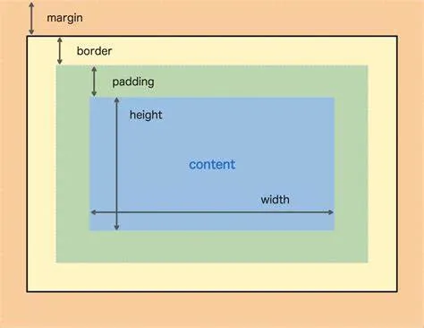

Understanding the concepts of Margins, Borders, Padding is important when manipulating HTML content. I will attemp to explain the basics involved. It is important to note, these three concepts encapsulate any given content of the HTML.
Below is an image demonstrating the layout of the Margins, Borders and Padding.
As you can see in the above image, both the height and width of the Content, Padding, Border and Margin, all have potential values. These values can be manipulated to acheive specific results. For example, you could change the border size to suit and add the color black. This would add border around your content. You could also change the margin sizes to move the content around the page.